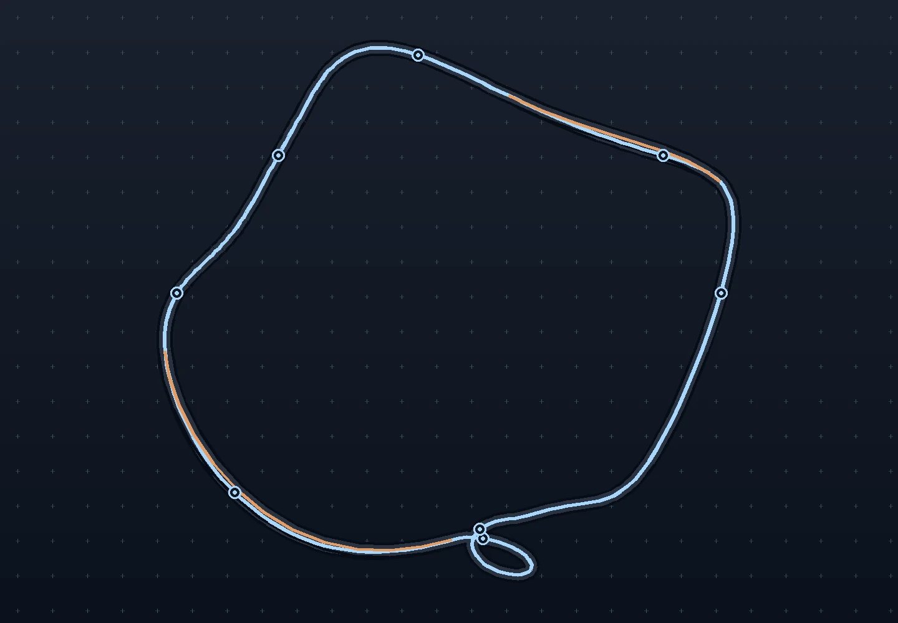

Tidal Braid
The shoreline route dips through a buried corkscrew and climbs into a loop tilted 65° around its entry direction.
Recharge and repair sit before the stunt sequence. Boosts mark the corkscrew, jump and loop approaches.
Hover racing
Follow two terrain courses through tilted loops, corkscrews and alternate lanes. These course studies combine spline roadways, vehicle clearance and checkpoint design.
Tidal Braid route plan from the authored splines. Cyan lines mark alternate routes.
The shoreline route dips through a buried corkscrew and climbs into a loop tilted 65° around its entry direction.
Recharge and repair sit before the stunt sequence. Boosts mark the corkscrew, jump and loop approaches.

Raised switchbacks and a −40° loop make a distinct race line. Its roller has the same two low guide rails, leaving a 432-unit clear centre lane.
Both courses use amber and cyan to distinguish the left and right guide rails.
Each 3D route defines the road surface, barriers, checkpoints and a pair of directed split and merge lanes. A heightfield alone cannot describe overhangs in corkscrews or loops.
The retained route checks passed for both courses and both workbench views per course. Each track has one start and finish, with eight checkpoints in between.
The claim covers authored layouts and route-graph checks. A finished AAS navigation build, AI alternate-lane choice and a live race still need their own tests. This hub presents the courses as development work.